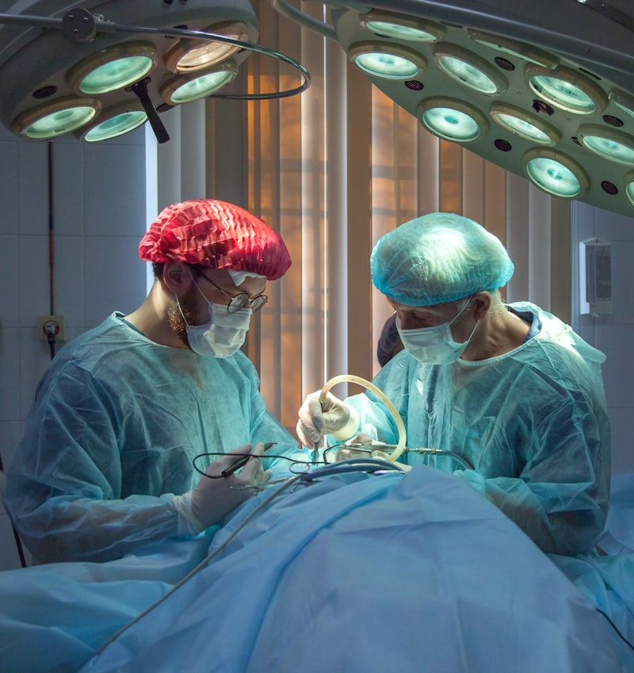
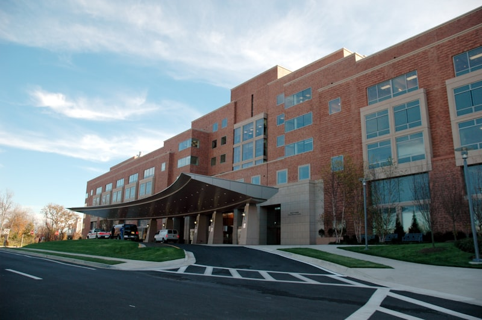
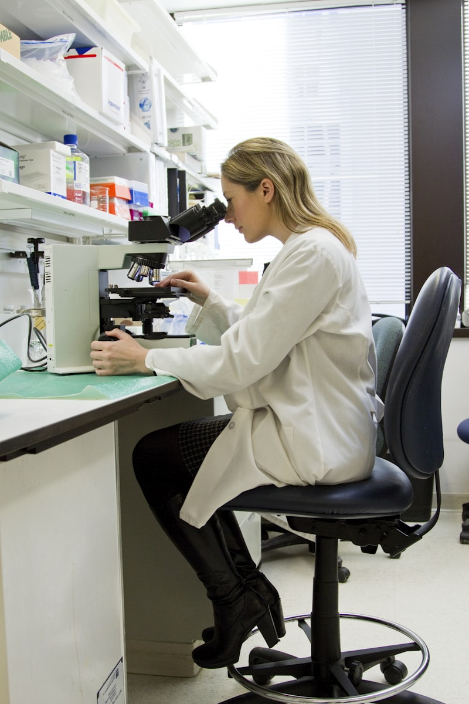
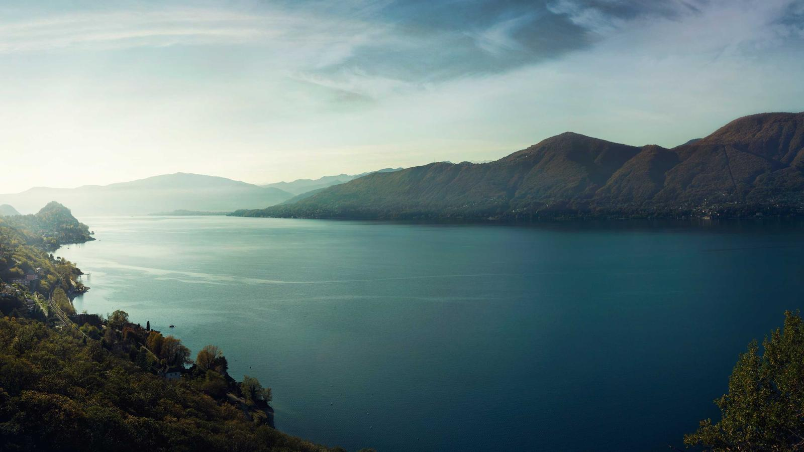
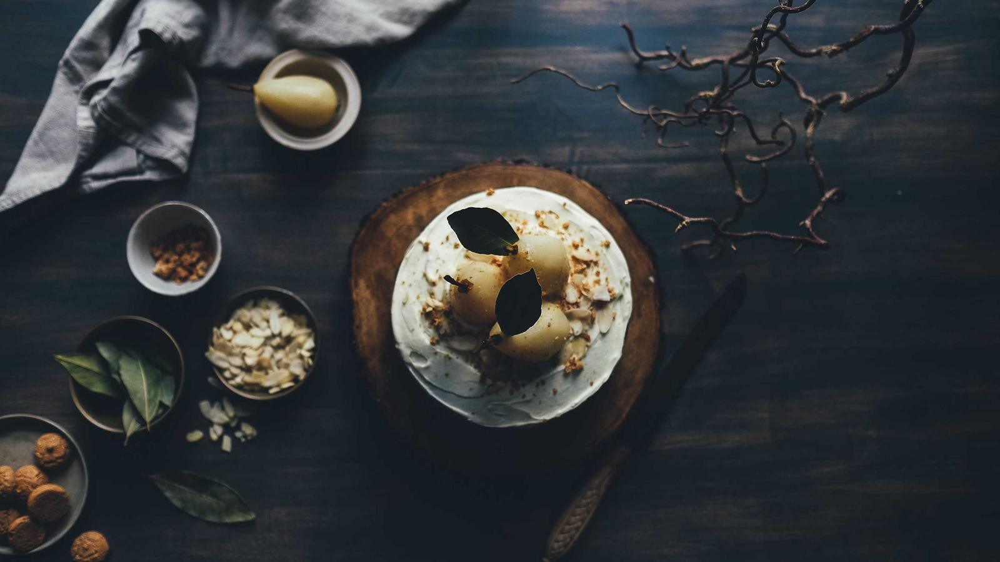

From ancient temples of healing to AI-powered care environments — how the spaces where we heal have evolved, and where they must go next.
The hospital is one of humanity's most consequential inventions. Its architecture has always embodied our understanding of disease, care, and what it means to be human.
The earliest hospitals were not hospitals at all — they were temples. The Greek Asclepieia, dedicated to the god of healing Asclepius, were sanctuaries where the sick slept in sacred dormitories and received treatment through a combination of prayer, herbal remedies, bathing, and dream interpretation. The most famous, at Epidaurus (4th century BC), included a theatre, gymnasium, and baths — an environment designed around the premise that healing required the restoration of the whole person, not just the treatment of disease.

Healing sanctuaries combining temple, theatre, baths, and dormitories. The Asclepieion at Epidaurus understood that environment was therapy — that architecture could be medicine. Patients slept in the abaton and received treatment through incubation: healing dreams.

The bimaristan was the world's first true hospital: a secular institution providing free care to all, regardless of faith or wealth. The Ahmad ibn Tulun Hospital in Cairo (872 AD) had separate wards for different conditions, a pharmacy, and — remarkably — a ward for mental illness, treated with music and water therapy.

In medieval Europe, monasteries were the primary providers of medical care. The Hôtel-Dieu in Paris (founded 651 AD) is the oldest hospital still operating. These institutions were charitable — care was an act of faith, not commerce. The ward plan, with beds arranged along a long hall, persisted for centuries.
The modern hospital emerged in the 18th century as Enlightenment thinking reframed disease as a problem of science rather than sin. The voluntary hospital movement in Britain — Guy's Hospital (1721), the London Hospital (1740) — created institutions funded by subscription and philanthropy, staffed by physicians who used them as teaching environments.
Florence Nightingale's experience in the Crimean War (1854) transformed hospital design. Her "pavilion ward" plan — long, narrow wards with high ceilings, large windows on both sides, and cross-ventilation — was a direct response to the filthy, overcrowded conditions she witnessed at Scutari. The Nightingale ward became the global standard for hospital architecture for the next century.

Pasteur's germ theory (1860s) and Lister's antiseptic technique (1867) fundamentally changed what a hospital needed to be. The building itself became an instrument of hygiene: smooth, cleanable surfaces replaced porous materials; operating theatres were redesigned for sterility; ventilation systems were engineered to move contaminated air out.
By the early 20th century, the hospital had been transformed from a place where the poor went to die into a place where science could save lives. This shift — from charity to technology — would define hospital design for the next hundred years, for better and for worse.

The 20th century hospital was shaped by three forces: the explosion of medical technology (X-rays, antibiotics, intensive care, organ transplants), the rise of health insurance and public healthcare systems, and the architectural logic of efficiency. The result was the hospital as we know it today: a large, complex, technology-dense building optimised for clinical workflow — and often hostile to the human beings inside it.
Le Corbusier's concept of the house as "a machine for living in" found its darkest expression in hospital design. Fluorescent-lit corridors, windowless operating theatres, identical rooms stripped of personality, wayfinding systems that confuse rather than guide — these are not accidents. They are the spatial consequences of designing for the disease rather than the patient.
We have built hospitals that are miracles of clinical capability and failures of human experience. The next generation must be both.
A $4 trillion global healthcare system built around buildings that were designed for the 20th century — now struggling with the demands of the 21st.
The WHO projects a global shortage of 10 million healthcare workers by 2030. In the US, the nursing shortage alone is projected at 200,000-450,000 by 2025. The pandemic accelerated an exodus: 18% of healthcare workers quit their jobs between 2020-2022, and one in five of those who remained said they planned to leave within two years.
This is not a recruitment problem. It is an environment problem. Healthcare workers are leaving because the physical and emotional conditions of their work have become unsustainable.
62% of nurses and 44% of physicians report burnout symptoms. Suicide rates among physicians are 2x the general population. The built environment contributes directly: windowless break rooms, inadequate rest spaces, noise levels averaging 72 dB (WHO recommends 35 dB for patient areas), and walking distances of 5-6 miles per nursing shift.
The hospital was designed for clinical efficiency. It was never designed for the wellbeing of the people who work in it — and the consequences are now measurable.

On any given day, 1 in 31 hospital patients in the US has at least one healthcare-associated infection (HAI). Globally, HAIs affect hundreds of millions of patients annually and contribute to significant mortality. The built environment is a vector: surfaces, ventilation systems, room layouts that impede hand hygiene, and multi-bed wards all contribute.
Antimicrobial-resistant organisms add urgency. The hospital of the future must be designed as an infection control instrument — from materials science to airflow engineering.

Hospital closures disproportionately affect rural and low-income communities. Since 2010, over 130 rural hospitals in the US have closed. Black patients are 20% more likely to experience adverse events in hospital. Indigenous communities in many countries have life expectancies 10-20 years shorter than the national average.
The geography of healthcare infrastructure mirrors — and reinforces — the geography of inequality. Design cannot solve systemic racism, but it can refuse to embed it in concrete.
US healthcare spending reached $4.5 trillion in 2022 — 17.3% of GDP. A single inpatient day averages $2,883. Hospital construction costs have escalated to $400-$1,000+ per square foot. The economics are unsustainable: hospitals operate on margins averaging 2-3%, while being asked to invest in ever-more-expensive technology and aging infrastructure.
The question is not whether hospitals need to change. It is whether the current economic model allows them to.

The evidence is now unambiguous: the physical environment of a hospital measurably affects clinical outcomes, patient recovery times, medication errors, staff turnover, and infection rates. Design is not decoration. It is a clinical intervention.
Seven trajectories that could transform healing environments over the next decade — from AI diagnostics to hospitals that function as ecosystems.
Machine learning that detects deterioration before humans can, reads scans faster than radiologists, and predicts complications before they occur.
Healing environments where nature is not amenity but clinical infrastructure — daylight, gardens, water, and natural materials as medicine.
Care moves to the patient — hospital-at-home, micro-hospitals, and virtual wards dissolving the boundary of the building.
Architecture that acknowledges the psychological experience of illness — designing for dignity, autonomy, and emotional safety.
Buildings designed from the outset to change — surge capacity built in, rooms that reconfigure, infrastructure that flexes with demand.
Healthcare that heals people without harming the planet — decarbonising one of the most energy-intensive building types.
The hospital as civic anchor — preventive care, social services, education, and community wellbeing under one roof.


Every design decision — lighting, acoustics, materials, views — must be evaluated for its impact on patient recovery. The evidence base is strong enough to make this a brief standard, not an aspiration.
Daylit break rooms, quiet rest spaces, reduced walking distances, acoustic refuges. You cannot deliver compassionate care from a depleted workforce in a hostile environment.
Surge capacity, isolation capability, adaptable airflow, and modular expansion must be embedded in every new hospital from day one — not improvised in crisis.
Physical accessibility, cultural safety, language access, and neurodiversity must be designed in — not accommodated as afterthoughts. The hospital must work for everyone, not just the average patient.
The building must be designed as a data platform: sensor networks, digital twins, real-time location systems, and infrastructure that supports technologies not yet invented.
A hospital that consumes resources to heal people while generating emissions that harm public health is a contradiction. Net-zero is the floor, not the ceiling.
The hospital that will define the next generation of care will not be the one with the most advanced scanner or the largest emergency department. It will be the one that understood that the building itself is a therapeutic instrument — and designed every surface, every sightline, every threshold accordingly.
Real-time monitoring of patient flow, bed occupancy, air quality, noise levels, hand-hygiene compliance, equipment location, and staff fatigue indicators — a continuous operational picture of the hospital as a living system.
A digital twin processes this data to identify patterns: which corridors create bottlenecks during shift changes, which rooms have the highest fall rates, when infection clusters correlate with ventilation anomalies. The building develops clinical intelligence about itself.
The building responds: redirecting airflow to contain an outbreak, adjusting lighting to support circadian rhythms, rerouting patient transport to reduce congestion, and informing renovation decisions with years of evidence about what works and what fails.
A selection of completed and proposed ZHA projects that directly address the future healthcare and civic brief — demonstrating what is possible when architecture is designed around human wellbeing, adaptability, and civic ambition.
A cultural campus housing four civic institutions organised as a continuous public landscape rather than a collection of buildings. Directly applicable to the community health hub model — demonstrating how civic infrastructure can create genuine community by treating shared space as its primary product. The boundary between institution and public park dissolves entirely.

Cancer care designed around the principles of nature, domesticity, and emotional safety — the Maggie's Centres programme represents the most advanced application of trauma-informed design in contemporary practice. ZHA's competition entry applies biomorphic spatial logic to a therapeutic brief that prioritises dignity and psychological safety over clinical efficiency. The closest analogue in current architectural practice to the future hospital brief.

The King Abdullah Petroleum Studies and Research Centre demonstrates ZHA's capacity to design environments for complex, evolving institutional requirements. Its interconnected crystalline pavilions — each housing different research functions, connected by shared social and circulation infrastructure — directly models the adaptive hospital brief: protected specialist zones connected by shared social and therapeutic infrastructure.
One of the first buildings in the world designed from the outset to operate as a living data system. Its AI-driven building management infrastructure — sensor networks monitoring occupancy, air quality, energy, and movement in real time — is the operational precedent for the self-learning hospital concept. What Bee'ah demonstrates for offices, the next generation of hospitals must deliver at clinical scale: an environment that continuously learns and improves itself.